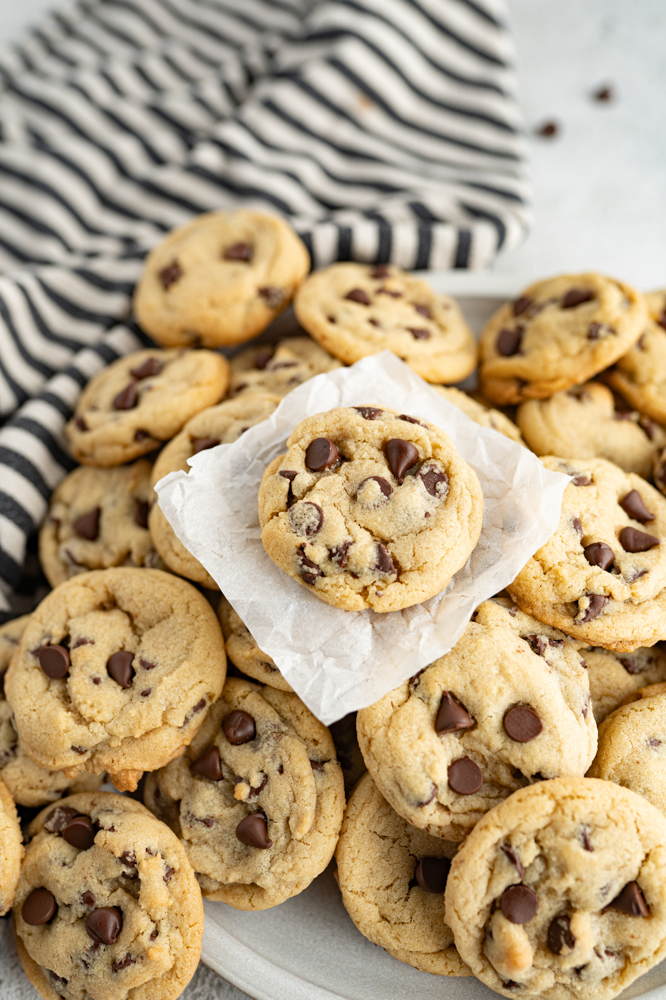

Chocolate Chip Cookies

The best homemade chocolate chip recipe. The recipe will ensure that your cookies are soft, chewy, and most importantly, tasty. This recipe will produce a perfect amount of cookies for you and only requires simple ingredients.
Ingredients
- Salted butter, softened
- Granulated sugar
- Brown sugar
- Egg
- Vanilla extract
- All-purpose flour
- Baking soda
- Salt
- Chocolate chips
Steps
- Preheat the oven to 350°F
- In a bowl of a stand mixer or with an electric hand mixer, cream together the butter, granulated sugar and brown sugar until light in color and fluffy in texture. This will take about 2 minutes.
- Scrape the sides of the bowl and add in the egg and vanilla extract. Mix until well combined.
- Add in the flour, baking soda and salt. Mix until a soft but not sticky dough forms.
- Fold in your favorite chocolate chips.
- Scoop the dough out into 1 1/2 tbsp portions and arrange on your cookie sheet. Can use parchment paper, a silicone mat or an ungreased cookie sheet.
- Bake at 350°F for 8-10 minutes or until the cookies have spread and are just beginning to turn golden brown on the edges.
- Allow the cookies to cool on the pan for 5 minutes before transferring to a wire cooking rack.
Back to recipe book